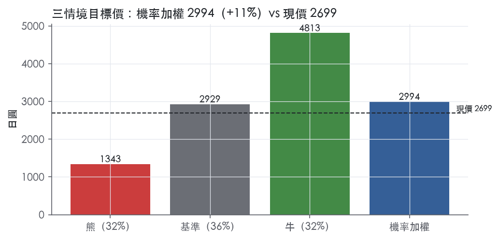
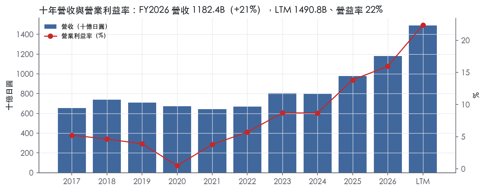
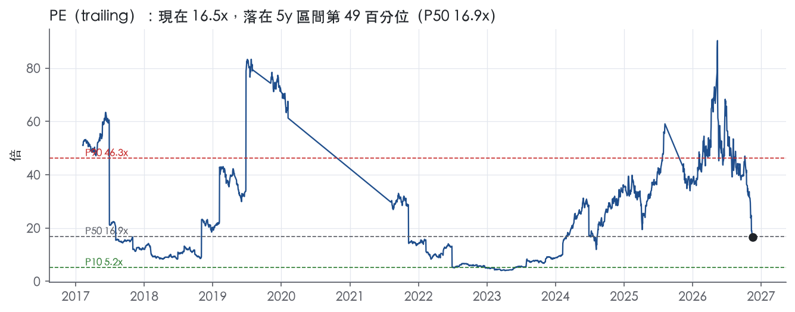
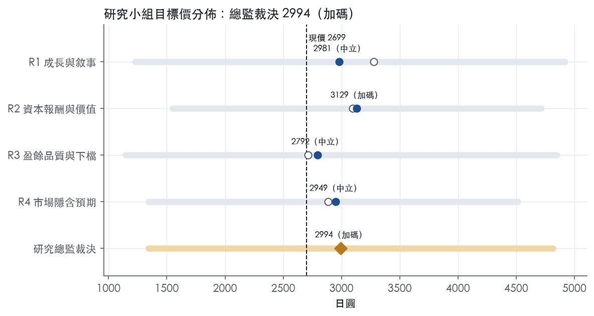
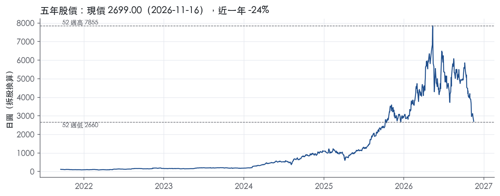

評等總表 › 未分類 › 5803.T
盈餘自高原回落非崩落，溫和看多｜評等 加碼｜目標價 2994
| 報告日 | 評等 | 目標價 | 當時股價 | 超額報酬 |
|---|---|---|---|---|
| 2026-11-16 | 加碼 | 2,994 | 2,699 | +5.4% |
| 評等 | 加碼（邊界，鄰近中立） |
| 12 個月目標價 | 2994 日圓 |
| 現價 | 2699.00 日圓（2026-11-16） |
| 預期報酬 | 股價 +10.9%＋股息 2.3%＝總報酬 +13.2%；日股門檻 7.8%，超額 +5.4% |
| 估值方法 | P/E 13.0x，套在第 5–8 季的EPS（也就是一年後的未來四季） |
| 三情境 | 熊 1343／基準 2929／牛 4813 |
| 研究流程 | 四位研究員兩輪辯論＋研究總監裁決 |
| 資料來源 | EDINET、TDnet、J-Quants、Yahoo、FRED（全免費） |
盈餘自高原回落非崩落，溫和看多（研究總監裁決，四位研究員兩輪辯論後）
評等 加碼（邊界，鄰近中立）｜12 個月目標價 2994 日圓（總監三情境機率加權 3024 與研究員中位數 2965 各半）｜現價 2699.00（2026-11-16）
預期報酬：股價 +10.9%＋股息 2.3%＝總報酬 +13.2%。日股門檻 7.8%，超額 +5.4%，離中立的分界不到三個百分點，屬邊界評等（落在其他級距的機率約五成）。
估值方法：P/E 13.0x，套在第 5–8 季的EPS（也就是一年後的未來四季）。三情境：熊 1343（32%）／基準 2929（36%）／牛 4813（32%）。
什麼會讓研究總監改變看法：FY2027Q3 情報通信分部營收季減或合併營益率跌破 22%，熊機率上調、立場轉中性；FY2028 期初計畫營業利益年增 15% 以上且營益率 22% 以上，基準倍數上調到 16x。
| 過去四季（實際，FY2027Q2） | 未來四季 | 第 5–8 季 | 第 9–12 季 | |
|---|---|---|---|---|
| 營收（B） | 1,490.8B | 1,863.5B | 2,105.8B | 2,232.1B |
| 營收成長 | 36.7% | 25.0% | 13.0% | 6.0% |
| 營業利益率 | 22.4% | 23.0% | 22.5% | 21.0% |
| EPS（日圓） | 163.24 | 204.62 | 225.29 | 222.90 |
| EPS 成長 | 108.6% | 25.3% | 10.1% | -1.1% |
| 每股股息（日圓） | — | 0.00 | 0.00 | 0.00 |
| P/E（現價） | 16.5x | 13.2x | 12.0x | 12.1x |
| 股息殖利率（現價） | 2.3% | — | — | — |
過去四季為申報數字；預測為研究總監的假設、程式計算。倍數與殖利率都用現價計算，用來看現價對應各期獲利的高低。
| 情境 | 機率（歷史） | 故事 | 未來四季營收成長 | 第 5–8 季營益率 | 倍數 | 目標價 | 股價漲跌 |
|---|---|---|---|---|---|---|---|
| 熊 | 32%（31%） | 全產業資料中心資本支出消化（風險表第 1 條）疊加本行下行路徑銅價 11,800 轉嫁落後（第 2 條），日圓 160 部分抵銷；Q5–Q8 為谷底盈餘取前瞻帶 P75（R4 驅動，y3 改 0%／16% 延續消化期） | 12.0% | 17.0% | 10.3x | 1343 | -50.3% |
| 基準 | 36%（39%） | 下半年超公司計畫、FY2028 上半年日圓營收持平於 Q2（匯率 153），營益率自 28% 回到 22% 出頭，300B 擴產開始出量，倍數持平 | 25.0% | 22.5% | 13.0x | 2929 | 8.5% |
| 牛 | 32%（30%） | Q2 動能延續、短交期訂單常態化，2027-05 FY2028 計畫讓市場把盈餘重分類為中段，倍數回到 3 年 P10 15.9x／現行 trailing 16.5x 水準（R4 驅動，倍數 15x→16x，y3 取 R1 牛情境） | 30.0% | 27.0% | 16.0x | 4813 | 78.3% |
目標價由程式依研究總監的驅動與倍數計算；機率由研究總監給定。括號內是歷史頻率：把這檔股票過去十年 12 個月報酬的波動形狀，置中在基準情境，結果落在各情境附近的比例。

四位研究員用不同方法各自估值，回應研究總監的質疑後交出第二輪，最後由總監逐點裁決。各研究員的主張見第七章，裁決理由見第八章，完整論證見《研究底稿》。
| 立場（一輪→二輪） | 加權目標價（一輪→二輪） | 評等（一輪→二輪） | 第二輪倍數 | 熊～牛目標價 | |
|---|---|---|---|---|---|
| R1 成長與敘事 | 看多→看多 | 3279→2981 | 買進→中立 | 13.0x | 1225～4917 |
| R2 資本報酬與價值 | 中性→看多 | 3098→3129 | 加碼→加碼 | 15.0x | 1550～4713 |
| R3 盈餘品質與下檔 | 中性→中性 | 2712→2792 | 減碼→中立 | 13.0x | 1146～4848 |
| R4 市場隱含預期 | 看多→看多 | 2885→2949 | 中立→中立 | 13.0x | 1343～4512 |
| 研究總監裁決 | 看多 | 2994 | 加碼 | 13.0x | 1343～4813 |
目標價由程式依各自的驅動與倍數計算；評等＝機率加權總報酬 − 日股門檻。
Fujikura（富士電線，證券代碼5803.T）是一家以「光通訊＋電子電裝＋能源」三引擎為核心、不動產為穩定收益補充的綜合電線電纜與精密加工公司。公司及其關係企業由フジクラ（當社）、107家子公司及12家關聯公司構成，橫跨情報通信、エレクトロニクス、自動車、エネルギー、不動産五個事業部門，從事製品之製造、銷售及服務等活動。公司以「進取の精神」與「技術のフジクラ」為DNA，透過「“つなぐ”テクノロジー™」創造顧客價值並貢獻社會，是公司明訂的存在意義（Purpose）。客戶群涵蓋北美超大型資料中心營運商、全球智慧型手機與伺服器品牌、汽車整車廠、日本電力公司及不動產租戶，橫跨電信基礎建設、消費電子、汽車供應鏈與公用事業四大終端市場。LTM 營收達1,490.80B日圓，公司市值4,477.17B日圓，是東證上市的中型工業股。
情報通信事業部門是公司目前最大、成長最快的分部，FY2026對外銷售額為653.0B日圓（652,977百万円換算），佔集團總營收1,182.36B日圓的55.2%，主要產品為光纖、光纜、通訊零件、光學零件及相關機器、網路設備與工程服務等，該分部FY2026營業利益152.7B日圓（152,729百万円換算）。エレクトロニクス事業部門FY2026對外銷售額為172.3B日圓（172,305百万円換算），佔比14.6%，營業利益7.7B日圓（7,666百万円換算），主力產品為印刷配線板（FPC）、電子線材、硬碟零件與各類連接器。自動車事業部門FY2026對外銷售額179.4B日圓（179,370百万円換算），佔比15.2%，營業利益6.8B日圓（6,809百万円換算），產品以汽車用線束（ワイヤハーネス）與電裝品為主。エネルギー事業部門FY2026對外銷售額157.0B日圓（156,983百万円換算），佔比13.3%，營業利益18.9B日圓（18,941百万円換算），產品含電力電纜、通訊電纜、鋁線與被覆線。不動産事業部門規模最小，FY2026對外銷售額11.0B日圓（11,032百万円換算），佔比0.9%，營業利益5.0B日圓（4,956百万円換算），主要來自公司自有不動産出租。2026年度起公司已把エレクトロニクス與自動車兩部門整併為「電子・電裝事業部門」，以強化次世代車與AI機器人領域的綜效。研發費用FY2026合計16.8B日圓，其中情報通信分部11.5B日圓、エレクトロニクス分部2.4B日圓。成長引擎明顯集中在情報通信（資料中心、光纖、CPO），其餘三個分部屬於成熟或週期性業務。
公司營收地理結構已高度北美化、且無單一客戶超過一成集中風險。依客戶所在地分類，FY2026合併營收中美國522.2B日圓、日本241.4B日圓、中國50.8B日圓、其他地區367.9B日圓，合計1,182.4B日圓；FY2025同項目依序為美國464.3B日圓、日本228.3B日圓、中國58.3B日圓、其他228.6B日圓，合計979.4B日圓，顯示美國市場一年內成長逾五成，是集團營收擴張的主力地區。有形固定資產分布上，FY2026日本104.0B日圓、美國44.4B日圓、泰國28.0B日圓、中國10.8B日圓、其他9.7B日圓，合計196.9B日圓，顯示生產基地仍以日本與東南亞為主，資產與銷售地理出現落差，反映公司以日本及泰國製造、銷往美國市場的供應鏈結構。最新半年報進一步細分：FY2027上半年（2026年4–9月）情報通信分部北美銷售341.1B日圓，較去年同期225.0B日圓大幅成長，是資料中心需求外溢最直接的證據。「10-K未揭露」單一前十大客戶名單與具體通路結構，僅說明無客戶占比超過一成。子公司AFL Telecommunications LLC是北美最重要營運實體，其FY2026銷售額355.4B日圓、經常利益63.8B日圓，佔集團合併營收逾一成，是美國資料中心光纖、光纜業務的主要法人載體。
最近四季的核心故事是情報通信分部因資料中心光纖需求爆發而帶動全集團獲利翻倍成長。FY2026Q4（2026年3月期末季）營收327.43B日圓、年增22.0%，營益率14.2%（is/dv相關季度資料）；FY2027Q1（2026年4–6月）營收跳升至402.01B日圓、年增50.1%，營益率一舉提升到26.1%；FY2027Q2（2026年7–9月）營收續創465.42B日圓、年增59.9%，營益率28.0%，淨利99.86B日圓、EPS 60.29日圓（最近8季資料表）。公司最新半年報（累計2026年4–9月）顯示，上半年合併銷售額867.4B日圓（年增55.2%），營業利益235.0B日圓（年增160.6%），經常利益243.1B日圓（年增165.1%），歸屬母公司中間純利益180.3B日圓（年增168.5%）。分部別來看，情報通信事業上半年銷售額581.5B日圓（年增91.6%）、營業利益217.7B日圓（年增194.8%），是獲利成長的唯一主引擎；電子事業銷售額80.9B日圓（年減6.2%）、營業利益4.6B日圓（年減7.1%），反映智慧型手機產品組合轉變；自動車事業銷售額106.3B日圓（年增23.3%）、營業利益1.8B日圓，與前年同期2.3B日圓相近，主要受惠歐洲增產；能源事業銷售額91.1B日圓（年增24.4%）、營業利益10.6B日圓（年增41.1%），受惠銅價走高與高採算案件；不動産事業銷售額5.6B日圓（年增1.5%）、營業利益2.7B日圓（年增7.0%）。公司已於2026年11月10日修正全年業績預想，最新全年計畫為營收1,768.00B日圓、營業利益429.00B日圓、經常利益449.00B日圓、歸屬母公司淨利326.00B日圓、EPS 196.86日圓。對比半年實績（營收867.4B、營業利益235.0B），下半年隱含營收約900.6B日圓、營業利益約194.0B日圓，較上半年略為放緩，顯示公司預期成長動能邊際趨緩或維持謹慎假設。現金及約當現金期末餘額達239.4B日圓，較期初178.9B日圓明顯增加，營業活動現金流上半年達102.3B日圓（前年同期僅13.1B日圓），顯示獲利轉現金能力顯著改善。
公司在2026年5月公布「2028年中期經營計畫」（28中期），將2026年度定位為集團「第4の創業」的起點，核心成長領域鎖定「情報インフラ」、「情報ストレージ」、「情報端末」三大分野，尤其聚焦資料中心驅動的情報インフラ與情報ストレージ。公司明確表示28中期最終年度（2028年度）目標為銷售額1,600.0B日圓（1兆6,000億円換算）、營業利益315.0B日圓（3,150億円換算）、ROE 28.5%、ROIC 21.6%，並承諾維持自己資本比率50%、連結配當性向約40%作為股東回饋目標。在情報通信分部，公司於2026年3月決定在日美合計投資最高300.0B日圓（3,000億円換算），將光纖與SWR®/WTC®產能擴大至現狀最多三倍，以因應北美超大型資料中心的持續強勁需求；在佐倉事業所另投入約45.0B日圓（450億円換算）興建光纖・SWR®次世代工廠。公司亦提及核融合能源用高溫超電導線材需求升溫，2025年度已決定約5.6B日圓（56億円換算）的工廠擴產投資，並規劃2027年度產能較2024年度擴增約3至4倍、2028年度再翻倍。整體而言，公司的成長故事高度集中於AI資料中心帶動的光纖與光連接產品，其餘電子、汽車、能源分部扮演現金流穩定器角色，而28中期計畫隱含的EPS與ROE目標已遠高於過去十年均值，執行風險在於資本支出能否如期轉化為產能與訂單。從估值角度看，目前P/E 16.5x仍低於過去五年中位數16.9x，顯示市場尚未完全反映半年報的爆發性成長與上修後的全年計畫。匯率方面，近期日圓兌日圓在158附近，對以美國為主要成長市場的公司構成正面換匯順風，但公司財報並未揭露明確的全年計畫假設匯率，需留意後續財測是否隱含更保守的匯率假設。

富士電線的護城河評為「窄」，趨勢「變寬」。護城河只存在於情報通信事業部門的資料中心高密度光配線產品，電子、汽車與能源三個部門看不到可以持續的超額報酬。量化底稿顯示十年中只有近四年 ROIC 高於資本成本，所以不給「寬」；但產品領先與事業組合改變是結構性的，我們有把握未來 5 年 ROIC 仍高於資本成本。
無形資產（專利與產品技術）是主要來源。公司自述 SWR®/WTC® 以細徑高密度有效利用有限的布設空間、縮短接續時間，是資料中心市場競爭力的來源。2025 年度公司推出世界首款 13,824 心 WTC®，外徑壓在 40㎜ 以下，心數是過去最多 6,912 心的兩倍。公司表示會結合 IP Landscape 等工具推動知財創造，並積極活用既有知財。同業要在同樣外徑下做出同樣心數，需要光纖、纜線結構與製程三方面一起突破，我們估計追趕需要數年，這是窄護城河的核心。
轉換成本是次要來源，正在形成但還不牢固。資料中心採用 MMC 用套管增加，公司也推出採用 SWR®/WTC® 的 MMC 附纜主幹纜線。CPO 用途開始採用公司的偏波保持光纖，2025 年度出貨增加。公司以光纖纜線、熔接機、光連接器、光元件到通訊工程的整套方案作為強項。連接器規格與熔接機一旦寫進超大型資料中心的設計標準，客戶要換供應商就得重新驗證，這是轉換成本；但每一代設計週期都會重新招標，所以鎖定期有限。
成本優勢、網路效應與效率規模都沒有證據，不列入。
數字只支持「近四年的窄護城河」，不支持「寬」。ROIC 十年平均 13.5%，只比資本成本代理值 10.1% 高 3.4%。有資料的 9 年中只有 4 年 ROIC 高於資本成本，而且集中在 FY2023 到 FY2026（–FY2026：16.9%、15.8%、28.4%、35.7%）。FY2019 到 FY2022 的 ROIC 只有 4.2%、0.8%、4.5%、8.8%（–FY2022），FY2020 淨利是 -38.51B 日圓，這段期間沒有任何護城河可言。
利潤率波動也和寬護城河不符。毛利率十年標準差 4.0%、區間 14.8% 到 28.1%；營業利益率標準差 4.5%、區間 0.5% 到 16.0%。最新值就是十年最高值，代表目前處於週期高點，不是穩態。
我們仍然維持「窄」而不下修為「無」，理由是 FY2023 以後的改善來自結構變化，不只是景氣。情報通信部門 FY2026 的區段利益是 152,729M 日圓，集團區段利益合計是 188,707M 日圓。獲利來源已經集中在有產品領先的部門，淨負債也從 217.27B 日圓轉為 -93.93B 日圓，財務結構不再拖累報酬。
另一處衝突是公司自己的目標：28 中期最終年度的 ROIC 目標是 21.6%。這個目標低於 FY2026 的 35.7%，代表管理層自己也預期大額投資會稀釋報酬率。資本成本代理值用的是美國 10 年債 5.1，高於日本 10 年債 2.841，所以 10.1% 這道門檻偏嚴；即使門檻放寬，FY2020 前後的低 ROIC 結論也不會改變。
最大的侵蝕風險是全產業同時擴產，導致供給過剩。公司已決定在日美投入最多 300B 日圓，把光纖與 SWR®/WTC® 產能各自提高到現狀的最多 3 倍。同業看到同樣的 AI 需求也會擴產；一旦超大型資料中心的資本支出放緩，新增產能就會壓低價格，FY2019 到 FY2022 的低報酬可能重演。
第二是客戶議價力。FY2026 美國客戶的營收是 522,200M 日圓。終端需求集中在少數超大型業者手上，即使沒有單一客戶占比超過一成，採購方的力量仍然遠大於供應商。
第三是技術替代。公司自己在開發多芯光纖與空芯光纖，追求更細的徑與更低的損耗。下一代光纖如果改寫高密度的定義，SWR®/WTC® 的領先可能歸零，必須看公司能否在新一代產品上繼續領先。
第四是外部環境：公司自述美國關稅政策與中東等地緣政治風險，使前景不透明。
目標倍數相對電線電纜同業可以給溫和溢價，但不應給寬護城河等級的倍數，溢價持續期以 5 年為上限。理由是超額報酬只集中在情報通信一個部門，而且只有四年紀錄；FY2027Q2 的季營益率 28.0%屬於週期高點，終值階段的 ROIC 應該向公司目標 21.6% 以下收斂，不應外推 35.7%。目前 P/E 16.5x 接近 5 年中位數 16.9x，這個位置大致反映了「窄護城河加週期高點」的定價，不足以支持再往上重估。
| 指標 | 最新 | 十年平均 | 標準差 | 最低 | 最高 |
|---|---|---|---|---|---|
| ROIC | 35.7% | 13.5% | 11.2% | 0.8% | 35.7% |
| 毛利率 | 28.1% | 20.3% | 4.0% | 14.8% | 28.1% |
| 營業利益率 | 16.0% | 7.1% | 4.5% | 0.5% | 16.0% |
| FCF 利潤率 | 7.9% | 4.0% | 4.1% | -2.0% | 9.2% |
| ROE | 32.5% | 10.6% | 15.4% | -20.9% | 32.5% |
程式計算。資本成本代理值（10 年債＋5%）：10.1%；ROIC 平均減資本成本：3.4%；ROIC 有資料的 9 年中，高於資本成本 4 年。
LTM 營業現金流／淨利 0.82x，低於綠燈門檻 1.00x，但近三年平均 1.32x、十年平均 2.74x 都遠高於 1x，長期並非問題。LTM 自由現金流／淨利 0.67x 同樣低於綠燈 0.90x 門檻。應計比率 LTM 為 4.3%，高於綠燈 0.0% 門檻，但近三年與十年平均分別是 -2.3% 與 -4.8%，顯示這是短期現象而非長期趨勢。三個黃燈同源：半年報現金流量表顯示，受情報通信事業部門需求暴增拉動，売上債権的增減額為 -93,860M、棚卸資産增減額為 -42,197M，兩項合計吃掉逾 136,000M 的營運現金。有報 MD&A 也說明總資産增加主要來自「情報通信事業部門における需要増を背景に、売上債権及び棚卸資産等の流動資産…が増加した」。這是成長型應收／存貨堆積，不是收入認列或準備金操縱造成的盈餘品質問題。半年營業活動現金流仍達 102,286M，較去年同期 13,125M 大幅成長，現金是落後而非消失。
決算短信的中間損益表把特別利益與特別損失放在経常利益之下，不計入營業利益或経常利益。H1 特別利益合計 1,812M，主要是関係会社株式売却益 1,712M 與投資有価証券売却益 93M；特別損失合計 2,062M，主要是退職給付制度改定損 1,127M 與事業構造改善費用 935M。兩者淨額約 -250M，相對 243,086M 的経常利益極小，屬於一次性項目（股權出售收益、退休金制度修訂損失、結構改善費用），不影響本業獲利能力的判斷。此外，本期期初把避險會計方法從「振當處理」改為「期末時價評價」，公司說明「当該会計方針の変更が過去の期間に与える影響は軽微である」，未追溯適用；這是會計口徑調整而非盈餘灌水，但意味未來營業外收支（為替差損益、評價損益）的季度波動會比過去大。本資料未揭露獨立的 SBC 項目，計分表 SBC／營收為空值，日股慣例股權薪酬規模小且多未單獨列示，不視為紅旗。
槓桿極低：淨負債/EBITDA LTM -0.37x（綠），十年平均僅 2.09x；利息保障倍數 LTM 133.7x（綠），十年平均 23.2x，付息能力完全不是問題。 為 -131.95B，即淨現金狀態。半年資產負債表顯示總資産由 FY2026 期末 969,454M 增至 2026/9/30 的 1,171,597M，負債合計由 376,261M 增至 444,381M，純資産由 593,193M 增至 727,216M，增量主要來自本期純益累積。有利子負債結構輕：短期借入金 40,534M、商業本票 20,000M（新增）、一年內償還予定社債 10,000M、長期借入金 26,950M、社債 10,000M，現金及び現金同等物期末殘餘 239,430M，現金遠高於有利子負債總額。股東回饋：（股利＋回購）/淨利 LTM 23.0%，低於綠燈 50.0% 門檻，十年平均 49.1%；原因是淨利成長太快（半年親會社株主歸屬純利益年增 168.5%）使比率機械性下滑，實際配當金支付額由去年同期 18,381M 增加至 35,932M，近乎翻倍，不是股東回饋縮水而是分母膨脹太快。稀釋股數年變動 LTM 與近三年均為 0.0%，股數穩定，沒有增發稀釋也沒有大規模回購。
綠燈項目（淨負債/EBITDA、利息保障倍數）沒有爭議，槓桿與付息能力俱佳，無需額外解釋。
估值應以 GAAP 淨利為主軸，不必對盈餘做額外折價，因為黃燈全部可用成長期工作資本與淨利基數效應解釋，沒有未解釋的紅旗。但考量 LTM 現金轉換率仍低於 1x，估值模型抓 FCF 時應採用近三年平均 FCF/淨利 1.00x而非 LTM 單季數字，避免高估自由現金流轉換速度。淨現金資產負債表（淨負債/EBITDA -0.37x）不構成任何槓桿限制，不應對本益比或 EV/EBITDA 倍數做槓桿折價；反而淨現金部位提供進一步買回或加碼股利的空間，是倍數重估的正面因子。
| 項目 | LTM | 近三年 | 十年 | 燈號 | 規則 |
|---|---|---|---|---|---|
| 營業現金流／淨利 | 0.82x | 1.32x | 2.74x | 黃 | ≥1.00x 綠、<0.80x 紅 |
| 自由現金流／淨利 | 0.67x | 1.00x | -1.45x | 黃 | ≥0.90x 綠、<0.60x 紅 |
| 應計比率（(淨利−CFO)／平均總資產） | 4.3% | -2.3% | -4.8% | 黃 | ≤0.0% 綠、>5.0% 紅 |
| SBC／營收 | — | — | — | — | ≤3.0% 綠、>8.0% 紅 |
| 淨負債／EBITDA | -0.37x | -0.12x | 2.09x | 綠 | ≤1.50x 綠、>3.00x 紅 |
| 利息保障倍數（營業利益／利息） | 133.7x | 50.5x | 23.2x | 綠 | ≥8.00x 綠、<3.00x 紅 |
| 稀釋股數年變動 | 0.0% | 0.0% | -0.2% | 黃 | ≤0.0% 綠、>3.0% 紅 |
| （股利＋回購）／淨利 | 23.0% | 23.3% | 49.1% | 黃 | ≥50.0% 綠、<0.0% 紅 |
程式計算；燈號以 LTM（無則近三年平均）判定。
| 風險 | 觸發指標（看什麼數字、在哪裡看） | 對 EPS 的影響方向與粗略幅度 | 未來 12 個月發生機率（高／中／低） | 出處 |
|---|---|---|---|---|
| 1. 資料中心需求集中度過高，情報通信分部單季/單年成長率驟降 | 決算短信「情報通信」分部營收年增率（FY2027H1 已達91.6%）、AFL Telecommunications LLC 法人損益 | 負向，大：情報通信分部FY2027H1營業利益217.7B日圓，占集團營業利益235.0B日圓絕大部分，若需求降溫EPS將顯著下修 | 中 | 研究判斷 |
| 2. 銅價格劇烈變動侵蝕毛利，調價機制有時間差 | LME銅現貨價、能源分部毛利率／營業利益變化（FY2027H1能源分部營業利益年增41.1%至10.6B日圓，主要受銅價高與高採算案件帶動） | 負向，中：銅是「主要な材料」，仕入價格變動不一定即時反映在售價上 | 中 | |
| 3. 日圓兌日圓匯率反轉，侵蝕美國市場換算後收益 | usdjpy 即期匯率（現為158.23）與公司全年計畫隱含假設匯率之差 | 負向，中：公司FY2026美國客戶營收522.2B日圓（美國一年內成長逾五成），日圓若大幅升值將使換算後收益縮水 | 中 | 研究判斷 |
| 4. 資本支出能否如期轉化為產能與訂單（執行風險） | 日美合計擴產投資最高300.0B日圓進度、佐倉事業所45.0B日圓新廠量產時程 | 負向，中：若擴產延遲或產能利用率不及預期，28中期計畫（2028年度營業利益目標315.0B日圓）將落空，估值重估風險上升 | 中 | |
| 5. 利率上升增加利息支出 | 日本銀行政策利率、公司短期借入金與商業本票餘額（FY2027H1短期借入金40.5B日圓、商業本票20.0B日圓） | 負向，小：公司明言「金利が上昇した場合には、支払利息が増加」，但負債規模相對淨現金部位（淨負債為負131.95B日圓）影響有限 | 低 |
風險一：情報通信分部單一引擎風險最嚴重，因為FY2027上半年集團營業利益235.0B日圓中，情報通信分部貢獻217.7B日圓，等於其他四個分部（電子、自動車、能源、不動産）加總對集團營業利益的貢獻幾乎可以忽略。這個分部的成長動能完全來自「データセンタ向け投資の拡大」與「短納期対応により受注した光コンポーネント製品」，若超大型資料中心業者（hyperscaler）的資本支出周期出現任何放緩訊號，情報通信分部營收年增率將從現在91.6%的高速急劇收斂，拖累集團EPS。監測方法是每季決算短信公布的情報通信分部營收/營業利益年增率，以及美國子公司AFL Telecommunications LLC的法人損益揭露。
風險二：銅價變動是公司原文明確點名的風險：「銅価格の著しい変動によって当社グループの経営成績は影響を受ける可能性があります」。由於「銅価格の急激な変化による仕入価格の変動が即座に製品価格に反映されるとは限らない」，銅價急跌時毛利可能短期受壓，急漲時則可能像FY2027H1一樣帶來一次性毛利擴張（能源分部營業利益年增41.1%至10.6B日圓），波動性本身就是風險來源。
風險三：匯率風險雖然公司原文只以一般性文字描述（「通貨ヘッジ取引を行い…必ずしも為替リスクを完全に回避するものではない」），但業務概況章揭露美國客戶營收占比已從FY2025的464.3B日圓成長至FY2026的522.2B日圓，且公司並未在決算短信中揭露全年計畫的假設匯率，這使得投資人無法直接比對現行匯率（158.23）與公司內部假設的差距，是資訊揭露的缺口。
風險四：資本支出執行風險源自公司自己設定的高標準——2028年度營業利益目標315.0B日圓、ROE 28.5%、ROIC 21.6%，遠高於過去十年歷史均值，而這些目標高度依賴日美合計最高300.0B日圓的擴產投資與佐倉45.0B日圓新廠能否如期量產。資本支出周期的公司常見的風險是工程延遲、設備交期拉長或良率爬坡不如預期，這些在有報風險因子中並未單獨列出，屬於我們自行判斷的補充項。
風險五：利率風險公司原文有提及但影響相對最小，因公司目前淨負債為負131.95B日圓（即淨現金狀態），利息支出增加對EPS的侵蝕幅度有限，僅在短期借入金與商業本票餘額持續擴大時需要留意（FY2027H1短期借入金40.5B日圓、商業本票20.0B日圓，較FY2026年末的24.7B日圓與0日圓明顯增加）。
客戶集中度未完全揭露：公司僅說明「無客戶占比超過一成」，但沒有揭露前五大或前十大客戶的具體占比。情報通信分部對北美超大型資料中心業者的依賴程度，實際上可能遠高於單一客戶一成的門檻（因為多家hyperscaler可能共用相似的資本支出周期），這是財報結構性揭露不足之處，也是監測上的盲點。
東證資本效率要求帶來的股東回饋壓力：公司已承諾連結配當性向約40%、自己資本比率50%作為28中期目標，但若情報通信分部獲利爆發式成長持續，淨現金部位將進一步擴大（FY2027H1現金及約當現金期末餘額已達239.4B日圓，較期初178.9B日圓明顯增加），市場可能要求公司在庫藏股買回或配息上做出更激進的回應，這部分在有報的風險因子章並未提及，屬於我們基於東證PBR改善要求外加的補充判斷。
現價 2699.00 對應 trailing（過去四季）P/E 16.5x、EV/EBITDA 12.1x、EV/EBITA 13.0x、EV/Sales 2.9x、FCF 殖利率 4.1%。主要估值倍數 P/E 現在 16.5x，落在5 年區間第 49 百分位（P10／P50／P90 = 5.2x／16.9x／46.3x）。

把程式的機械基準預測放到現價下，市場付的前瞻倍數是：P/E（未來四季） 12.9x、P/E（第 5–8 季） 11.1x。反推 DCF 顯示市價隱含未來五年營收年成長 3.2%（WACC 9.0%、終值成長 3.0%、FCF 利潤率 16.8%，SBC 不加回）。
| 倍數 | 現在 | 5 年 P10 | 5 年 P50 | 5 年 P90 | 現在分位 | 全期 P50 |
|---|---|---|---|---|---|---|
| P/E | 16.5x | 5.2x | 16.9x | 46.3x | 49.1% | 20.2x |
| EV/EBITDA | 12.0x | — | — | — | — | 7.7x |
| EV/EBITA | 13.0x | — | — | — | — | 14.6x |
| EV/EBIT | 13.0x | — | — | — | — | 14.6x |
| EV/Sales | 2.9x | — | — | — | — | 0.7x |
| P/S | 3.0x | 0.3x | 1.0x | 6.3x | 73.9% | 0.4x |
| P/FCF | 24.6x | 4.8x | 16.9x | 89.4x | 69.3% | 15.8x |
trailing 倍數（股價 ÷ 過去四季）；分位以每個交易日計算。
（日股同業籃尚未建置：評等門檻用日股絕對門檻＝日本 10 年公債＋股權風險溢酬 5%，見首頁。）
事後實現前瞻倍數帶（P/E，2018-11-21..2025-11-19）：P10／P50／P90 = 3.2x／7.6x／14.3x。它是每個交易日的股價除以之後四季實際實現的指標；一年後，今天的第 5–8 季正是那時的未來四季，所以這條帶是 12 個月目標價的同口徑倍數。因為用的是事後實際而非當時預期，過去成長超乎預期的公司這條帶會偏低。
程式的機械基準（成長率從過去四季年增率三年收斂到 6%、利潤率持平）用 事後實現前瞻 P/E P50 估值得到 1848（-31.5%），市場現行前瞻倍數（現價 ÷ 基準 未來四季指標）一年後持平，套在基準 第 5–8 季指標得到 3119。這兩個數字只是參考點，不是本報告的目標價；研究員對這個定價的回應在第七章。
下表是每位研究員第一輪（各自獨立）與第二輪（回應研究總監的質疑後）的結果。目標價全由程式依各自的假設計算。
| 立場（一輪→二輪） | 加權目標價（一輪→二輪） | 評等（一輪→二輪） | 第二輪倍數 | 熊～牛目標價 | |
|---|---|---|---|---|---|
| R1 成長與敘事 | 看多→看多 | 3279→2981 | 買進→中立 | 13.0x | 1225～4917 |
| R2 資本報酬與價值 | 中性→看多 | 3098→3129 | 加碼→加碼 | 15.0x | 1550～4713 |
| R3 盈餘品質與下檔 | 中性→中性 | 2712→2792 | 減碼→中立 | 13.0x | 1146～4848 |
| R4 市場隱含預期 | 看多→看多 | 2885→2949 | 中立→中立 | 13.0x | 1343～4512 |
| 研究總監裁決 | 看多 | 2994 | 加碼 | 13.0x | 1343～4813 |
目標價由程式依各自的驅動與倍數計算；評等＝機率加權總報酬 − 日股門檻。
分歧度：第一輪 加權目標價 2712～3279（區間＝現價的 21%）· 倍數 13～15x · 立場 看多×2、中性×2；第二輪 加權目標價 2792～3129（區間＝現價的 12%）· 倍數 13～15x · 立場 看多×3、中性×1。

| 研究員 | 第二輪主張 | 堅持的理由 |
|---|---|---|
| R1 成長與敘事 | 看多，前瞻 EPS 給 13x，未來一年營收成長 28%。 | 公司計畫保守，FY2027 營業利益會明顯超過計畫 429.00B。 |
| R2 資本報酬與價值 | 溫和看多，未來一年 EPS 給 15x，報酬靠盈餘，倍數收縮。 | 利潤率在高峰，短納期急單不能外推，倍數不回到 16.9x。 |
| R3 盈餘品質與下檔 | 中性，前瞻 EPS 給 13x，股價已接近基準價值。 | 營益率 28% 是峰值，熊情境機率應高於牛情境。 |
| R4 市場隱含預期 | 看多，前瞻 EPS 給 13x；市場只隱含五年營收成長 3.2%。 | 市場低估光纖量的延續，300B 擴產會接上量。 |
每位研究員的逐條回應與完整論證見《研究底稿》（5803.T_研究底稿_2026-11-16.docx）。
| 分歧點 | R1 | R2 | R3 | R4 | 什麼資料會分出勝負 |
|---|---|---|---|---|---|
| ① NTM 營收成長 | 28%：計畫保守，OCF 證明需求真實 | 22%：短納期退潮，照公司計畫 | 22%：同 R2 | 20%：照計畫＋本行 153 匯率逆風 | FY2027Q3 短信（2027-02）季營收對 Q2 465.42B；FY2028 期初計畫（2027-05） |
| ② Q5–Q8 營益率 | 22% | 22% | 21.5%：Q2 28% 中約 4pp 歸短納期 | 22.5%：逐年緩降路徑 | FY2027Q3 合併與情報通信分部營益率 |
| ③ 目標倍數 | 13x q5_q8（前瞻帶 P75–P90） | 15x ntm（3 年 P10 15.9x 之下） | 13x q5_q8 | 13x q5_q8（≈市場持平 12.9x） | FY2028 期初計畫能否讓市場把盈餘重分類為中段 |
| ④ 情境機率 | 30/38/32 | 32/36/32 | 25/47/28（牛低於歷史） | 31/41/28（牛高於熊） | 同上；程式歷史對照 |
| ⑤ 熊情境深度 | y2 −10%、15%、11x→1225 | y2 −10%、13%、11x→1550 | y2 −15%、16%、11x→1146 | y2 −6%、17%、10.3x→1343 | 情報通信分部季營收是否季減（2027-02） |
① NTM 營收成長：own，25%。 選 R1 的「下半年會超過公司計畫」、選 R4 的「匯率用本行 153」，退回 R1 的「FY2028 上半年繼續逐季墊高」。R1 的證據最硬：2026 年 5 月的 28 中期把 FY2028 營收目標訂在 1,600.0B，半年後 FY2027 單年計畫就到 1,768.00B，這家公司的計畫保守到當年就過時；上半年營業現金流 102,286M、前年同期 13,125M，成長是現金不是帳面。R2、R3 的 22% 把下半年壓在計畫隱含水準（業務概況章推算約 900.6B），等於假設剛上修的公司這一次剛好不保守，缺證據。但 R1 的 28% 要 FY2028 上半年季營收高於 Q2 的 465.42B，而 300B 擴產上半年只支出 21,137M，新產能進不了 FY2028 上半年；再加上 R4 指出的 158→153 換算逆風（美國 522.2B、其他地區 367.9B，非日本占大宗），FY2028 上半年我看日圓營收持平於 Q2 水準。勝負在 2027 年 2 月：季營收守住 455B 以上，R1 的「超計畫」成立；跌破 440B，R2、R3 對。
② Q5–Q8 營益率：R4，22.5%。 四人只差 1pp，差的是方法。R3 的拆解有用：Q2 28.0%中約 4pp 歸短納期（假設），其餘是量的槓桿；但 R3 把「售價 −10%」同時放進 y2 營收的量價拆解與營益率，價格扣了兩次。R4 的季度路徑用 FY2026Q4 14.2% 對 Q3 17.6%（八季表）佐證第四季季節性，而 22.5% 等於機械基準把 LTM 22.4% 持平，不含利潤率擴張。決定性的是預測紀錄：R4 是本研究部唯一營業利益沒有系統性低估的研究員（誤差中位數 +0.2%），我（−2.4%）與 R2（−4.8%）都偏低，這次要往 R4 修。R3 的 21.5%、R2 的 y3 20% 保留在熊情境與第三年。
③ 目標倍數：13x，EPS@Q5–Q8（R1／R3／R4）。 三個錨互相對得上：市場對基準預測付的 Q5–Q8 前瞻 12.9x（基準模型市場持平參考點）；事後實現前瞻帶 P75 10.3x 與 P90 14.3x 之間，四人都同意這條帶因 EPS 從 0.85 到 94.93而偏低；我的 NTM EPS 略低於基準的 209.92，所以現價對我的 NTM 盈餘付的也在 13x 上下。13x 的意思是「一年後市場付的前瞻倍數和今天一樣」，報酬全來自盈餘。不選 R2 的 15x@ntm：他的錨 3 年 P10 15.9x是被 30–60x 泡沫期主導的窗口的底，而現價 16.5x trailing（快照）已經坐在這個底上；要在基準情境假設市場一年後付得比今天多，需要 2027 年 5 月 FY2028 期初計畫這個催化，那是牛情境的內容。不往下到 11.1x 零報酬倍數：淨現金 131.95B、連結配當性向 40% 承諾、半年配當支付額 35,932M 近乎翻倍，而股價從 52 週高 7855.0 到 2699.0（快照）的 de-rating 已先發生。沒有人再用利率壓倍數：R2 的 V4 已刪，R4 只說利率不提供紓解，符合第 7 條。
④ 情境機率：own，32／36／32。 R3 的 47% 基準太集中：本股置中分布 P25 −38%、P75 +45%（歷史基準率），中段本來就窄。R3 說「上尾來自谷底起漲、今天起點是峰值」有道理，但同樣適用於下尾——歷史 −50% 以上的事件起點是 EPS 0.85→−22.76→−3.25（–FY2021）配 20x 以上的倍數，今天的起點是 16.5x trailing、情報通信半年營業利益 217,652M、淨現金。兩頭都要打折，R3 只打了一頭。R4 牛高於熊的證據（無客戶占比超過一成、淨現金、OCF）接受，但 41% 基準同樣偏高。詳見「三情境與機率」。
⑤ 熊情境深度：R4。 R3 的熊（y2 −15%、營益率 16%）等於情報通信一年內退回 FY2026 的營收規模、集團營益率回到 FY2026 的 16.0%，是「需求消失＋價格戰」雙打，但同一份有報說無客戶占比超過一成，單一業者砍單做不到，要全產業同步消化。R4 的熊（y1 12%、y2 −6%、營益率 21%／17%）是消化期的形狀，並對到有報的三個機制：銅價轉嫁落後、避險不完全、関税引当金 13,404M。R4 的 10.3x 取前瞻帶 P75，理由是熊的 Q5–Q8 已是谷底盈餘、不重複懲罰，比 R1／R2／R3 的 11x 多一條可辯護的邏輯，接受。
總經偏離與漂移。 四人的 macro_deviations 都是空的，接受。R1、R2、R3 沒有明說匯率，等於默認 158 不動；我在 y1 納入本行 153（R4 的 E5 邏輯），不另列偏離。R4 對熊情境匯率方向的處理（銅價下行屬本行下行路徑、該路徑日圓 160 部分抵銷，兩者不疊加）接受；本公司的牛熊由資料中心資本支出週期決定，匯率是次要抵銷項。漂移：R1 向中位數靠攏 76%，但全部是回應 G1–G5——倍數由 15x@ntm 改 13x@q5_q8 是我要求的主尺切換，熊情境從 1773 掉到 1225 是 y2 −10% 之下 Q5–Q8 盈餘低於 NTM 盈餘的機械結果，不是立場移動；R1 的稅率 24% 沒寫進回應表，但與上半年法人税等 59,511M 對税引前 242,836M一致，我自己也採用。沒有要退回的漂移。
與機械基準不同的驅動：
目標倍數 13x，metric eps，horizon q5_q8。錨是市場持平參考點 12.9x與前瞻帶 P75–P90；若換 trailing 口徑，一年後 LTM 的對照是 5 年 P50 16.9x，我們的 13x 前瞻不假設回到五年中位。日股同業籃尚未建置，不做同業相對處理，門檻用程式的 7.8%。
機率依據：程式對 R4 情境（牛 +58%、熊 −53%）算出的歷史對照是 31／38／31，對 R1 情境（+68%／−58%）是 30／42／28；我的牛熊距離落在兩者之間，歷史大約是牛三成、熊三成出頭、基準近四成。我給 32／36／32，偏離都在 10 個百分點以內；牛熊相等而非歷史的熊略高，理由是這家公司特有的：(1) 股價已自 7855.0 跌到 2699.0、近一年 −23.5%（快照），trailing 16.5x 落在 3 年 P10 15.9x 附近，歷史 −50% 事件都從高倍數起跌，這次倍數壓縮已先發生；(2) 2026-11-10 上修計畫、半年營業現金流 102,286M，近期資料偏多；(3) 反推 DCF 隱含五年營收成長 3.2%，市場已定價為峰值，而 R3 說對的「峰值起點壓低上尾」我已用較溫和的牛（R4 驅動）反映；(4) 本研究部 22 份報告全數熊高於牛的結構偏誤，本檔不延續。
市場對基準預測付 12.9x 前瞻、反推 DCF 隱含五年營收成長 3.2%：市場定價的是「峰值後衰退」。我們的基準倍數和市場一樣，差距在盈餘：Q5–Q8 EPS 低於機械基準 242.55、但高於市場隱含的衰退路徑，差在 rev_growth_y1／y2（25%／13%）與 op_margin_y2 22.5%——「自高原回落」而非「跌回 FY2026」。立場溫和看多；基準情境目標價在市場持平參考點 3119 之下，看多的根據是牛熊等機率下牛的距離大於熊，加上 2.3% 股息率（快照）。若程式超額落在加碼門檻邊緣而給中立，差異來自門檻與基準情境的保守，不在方向。
現價 2699.00 → 點估目標價 2929 → 機率加權目標價 3024 → 目標價 2994，差距拆成五段：成長順延 +420 日圓（市場現行倍數 12.9x 一年後持平、獲利照機械基準）；倍數差 +35 日圓（總監倍數 13.0x vs 市場持平倍數 12.9x，同一機械基準預測）；盈餘差 -224 日圓（總監預測的第 5–8 季EPS 0.0B vs 機械基準 0.0B，同一倍數）；情境不對稱 +95 日圓（機率加權減點估）；研究小組平均 -30 日圓（總監機率加權 3024 與研究員第二輪中位數 2965 各半）。各段相加等於目標價減現價。本階段未接賣方共識，差距以市場隱含預期為對照。
| 驅動 | 機械基準 | 研究總監 | 差異 |
|---|---|---|---|
| 未來四季營收成長 | 26.4% | 25.0% | -1.4 pp |
| 第 5–8 季營收成長 | 16.2% | 13.0% | -3.2 pp |
| 第 9–12 季營收成長 | 6.0% | 6.0% | ＝ |
| 未來四季營益率 | 22.4% | 23.0% | +0.6 pp |
| 第 5–8 季營益率 | 22.4% | 22.5% | +0.1 pp |
| 第 9–12 季營益率 | 22.4% | 21.0% | -1.4 pp |
| D&A／營收 | 1.8% | 2.2% | +0.4 pp |
| 資本支出／營收 | 2.7% | 5.0% | +2.3 pp |
| SBC／營收 | 0.0% | 0.0% | ＝ |
| 稅率 | 20.8% | 24.0% | +3.2 pp |
| 股數年變動 | 0.0% | 0.0% | ＝ |
研究總監只寫偏移，未寫的沿用基準。
| 期 | 營收 | 成長 | 營益率 | 營業利益 | EBITDA | EBITA | 淨利 | EPS | FCF | 期末淨負債 |
|---|---|---|---|---|---|---|---|---|---|---|
| 未來四季 | 1,863.5B | 25.0% | 23.0% | 428.6B | 469.6B | 428.6B | 338.9B | 204.62 | 286.7B | -356.5B |
| 第 5–8 季 | 2,105.8B | 13.0% | 22.5% | 473.8B | 520.1B | 473.8B | 373.2B | 225.29 | 314.3B | -608.6B |
| 第 9–12 季 | 2,232.1B | 6.0% | 21.0% | 468.7B | 517.8B | 468.7B | 369.4B | 222.90 | 306.9B | -853.3B |
程式依上表的驅動計算；季度用最近四季季節性分攤；不含營運資金變動。
估值方法：P/E 13.0x，套在第 5–8 季的EPS（也就是一年後的未來四季）。研究總監目標倍數的錨：市場持平參考點 12.9x與事後實現前瞻帶 P75 10.3x–P90 14.3x 之間（band.P/E.fwd，帶因 EPS 自 0.85 升至 94.93 而偏低）；一年後前瞻倍數持平，不假設回到 5 年 trailing P50 16.9x，也不壓到零報酬 11.1x（淨現金、40% 配當性向、de-rating 已發生）。
計算：EPS（第 5–8 季） 225.29 × 13.0x → 點估目標價 2929（8.5%）；隱含 P/E（未來四季）14.3x、P/E（第 5–8 季）13.0x、EV/EBITDA（第 5–8 季）8.7x、FCF 殖利率（第 5–8 季）6.5%。
總監三情境機率加權目標價 3024，研究員第二輪中位數 2965，兩者各半＝目標價 2994；預期報酬 股價 +10.9%＋股息 2.3%＝總報酬 +13.2%；減評等門檻 7.8%（日股絕對門檻 7.8%（日本 10 年公債 2.84%（2026-11-12）＋股權風險溢酬 5%；日股同業籃尚未建置））＝超額報酬 +5.4% → 評等 加碼（超額 >+15% 買進、+5～+15% 加碼、±5% 中立、−5～−15% 減碼、<−15% 賣出）。同一份資料重開研究小組，超額約有正負四個百分點的雜訊（一個標準差，二十檔實測）；以此估計，評等落在其他級距的機率約五成。超額離中立的分界不到三個百分點，應視為邊界評等。
| 情境 | 機率 | 未來四季成長 | 第 5–8 季成長 | 第 5–8 季營益率 | EPS（第 5–8 季） | 倍數 | 目標價 |
|---|---|---|---|---|---|---|---|
| 熊 | 32% | 12.0% | -6.0% | 17.0% | 130.34 | 10.3x | 1343 |
| 基準 | 36% | 25.0% | 13.0% | 22.5% | 225.29 | 13.0x | 2929 |
| 牛 | 32% | 30.0% | 22.0% | 27.0% | 300.79 | 16.0x | 4813 |
| 主張 | 驗證日 | 看哪個數字 | 門檻 |
|---|---|---|---|
| FY2027Q3 合併季營收不低於 455B 且營益率不低於 23%，下半年超過公司計畫隱含水準 | 2027-02-15 | FY2027Q3 決算短信 季營收與營業利益率 | 營收 >= 455B 且營益率 >= 23% |
| FY2027 全年營業利益超過公司計畫 429.00B | 2027-05-20 | FY2027 決算短信 全年營業利益 | >= 445B |
| FY2028 期初業績予想營收高於 FY2027 實績且營業利益率不低於 20% | 2027-05-20 | FY2028 期初業績予想 營收年增率與營業利益率 | 營收年增 > 0% 且營益率 >= 20% |
| 300B 擴產進入支出期，FY2028 上半年資本支出顯著高於 FY2027 上半年 21,137M | 2027-11-15 | FY2028 中間連結キャッシュ・フロー計算書 有形及び無形固定資産の取得による支出 | >= 50,000M |
到期由程式結算（第 5 階段帳本）。
| 期 | 營收 | 成長 | 毛利率 | 營益率 | EBITDA | 淨利 | EPS | CFO | FCF | ROIC | 淨負債 | 稀釋股數 |
|---|---|---|---|---|---|---|---|---|---|---|---|---|
| FY2017 | 653.8B | — | 19.7% | 5.2% | 61.8B | 12.9B | 7.43 | 43.6B | -2.9B | — | 195.3B | 1.7B |
| FY2018 | 740.1B | 13.2% | 18.0% | 4.6% | 61.2B | 18.4B | 10.73 | 27.8B | -13.1B | 6.2% | 203.8B | 1.7B |
| FY2019 | 710.8B | -4.0% | 17.6% | 3.9% | 59.3B | 1.5B | 0.85 | 42.0B | -14.1B | 4.2% | 217.3B | 1.7B |
| FY2020 | 672.3B | -5.4% | 14.8% | 0.5% | 39.1B | -38.5B | -22.76 | 46.4B | 13.8B | 0.8% | 216.7B | — |
| FY2021 | 643.7B | -4.3% | 16.9% | 3.8% | 58.0B | -5.4B | -3.25 | 62.6B | 43.9B | 4.5% | 167.8B | 1.7B |
| FY2022 | 670.4B | 4.1% | 18.9% | 5.7% | 68.8B | 39.1B | 23.64 | 40.4B | 24.6B | 8.8% | 121.1B | 1.7B |
| FY2023 | 806.5B | 20.3% | 21.2% | 8.7% | 99.3B | 40.9B | 24.71 | 58.1B | 42.7B | 16.9% | 86.3B | 1.7B |
| FY2024 | 799.8B | -0.8% | 21.3% | 8.7% | 92.3B | 51.0B | 30.83 | 94.4B | 73.6B | 15.8% | 30.6B | 1.7B |
| FY2025 | 979.4B | 22.5% | 26.6% | 13.8% | 156.9B | 91.1B | 55.05 | 115.9B | 86.8B | 28.4% | -37.1B | 1.7B |
| FY2026 | 1,182.4B | 20.7% | 28.1% | 16.0% | 213.6B | 157.2B | 94.93 | 132.9B | 93.8B | 35.7% | -93.9B | 1.7B |
EDINET 有價證券報告書 XBRL（舊年度 US GAAP 公司只有經營指標摘要）；每股數據已依拆股換算到現在股數基準。EBITDA 空白＝該年沒有折舊攤銷（舊年度 US GAAP 公司的 EDINET 摘要沒有這一行）。
| 期 | 期末 | 推導 | 營收 | 毛利率 | 營益率 | EBITDA | 淨利 | EPS | CFO | FCF | 現金 | 總債務 |
|---|---|---|---|---|---|---|---|---|---|---|---|---|
| FY2024Q2 | 2023-09-30 | 201.7B | 21.4% | 9.0% | — | 14.1B | 8.50 | — | — | 118.8B | 195.6B | |
| FY2024Q3 | 2023-12-31 | 207.1B | 22.5% | 10.0% | — | 10.6B | 6.41 | — | — | — | 187.1B | |
| FY2024Q4 | 2024-03-31 | 200.8B | 22.1% | 9.0% | — | 15.2B | 9.20 | — | — | 147.0B | 177.6B | |
| FY2025Q2 | 2024-09-30 | — | — | — | — | — | — | — | — | 154.6B | 174.1B | |
| FY2025Q3 | 2024-12-31 | 263.4B | — | 15.6% | — | 30.4B | 18.34 | — | — | — | 174.1B | |
| FY2025Q4 | 2025-03-31 | 268.4B | — | 14.6% | — | 32.0B | 19.35 | — | — | 184.2B | 147.1B | |
| FY2026Q1 | 2025-06-30 | 267.9B | — | 15.3% | — | 31.3B | 18.92 | — | — | — | 147.1B | |
| FY2026Q2 | 2025-09-30 | 291.1B | — | 16.9% | — | 35.8B | 21.64 | — | — | 149.9B | 138.4B | |
| FY2026Q3 | 2025-12-31 | 295.9B | — | 17.6% | — | 44.8B | 27.05 | — | — | — | 138.4B | |
| FY2026Q4 | 2026-03-31 | 327.4B | — | 14.2% | — | 45.2B | 27.32 | — | — | 178.9B | 85.0B | |
| FY2027Q1 | 2026-06-30 | 402.0B | — | 26.1% | — | 80.4B | 48.58 | — | — | — | 85.0B | |
| FY2027Q2 | 2026-09-30 | 465.4B | — | 28.0% | — | 99.9B | 60.29 | — | — | 239.4B | 107.5B |
日本財報是年初至今的累計數：單季＝累計相減（Q2＝6 個月−3 個月、Q4＝年度−9 個月）；第 1、3 季多半不揭露現金流量表，單季現金流常空白，LTM 現金流用半年度拼。

本報告由 equity-desk 多代理系統產出，建置中版本，僅供內部研究與方法驗證，不構成投資建議。所有數字以 datapack.json 為準。